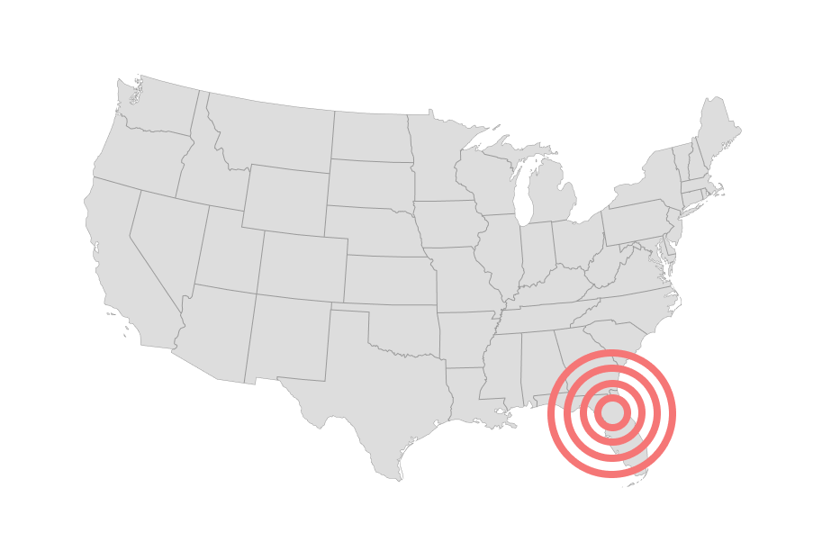

Screenshot of the finished product shortly after launch.
(Visual design by branding team.)
We would go on to launch on Obama's Twitter account five weeks before election day.
The app we came up with ended up reaching the president's 42 million Twitter followers, but the path getting their was not a straight line. We explored many ideas, and there were ups and downs. At one point, we had to completely change directions because of a Romney attack ad.
How it Works:

Step One
A voter gets a tweet from Obama inviting them to check out a map. They click it.

Step Two
The app detects the voter's location. In this case they are in Orange County, Florida.

Step Three
The app compiles a webpage about Obama's achievements, all tailored to Orange County, Florida.